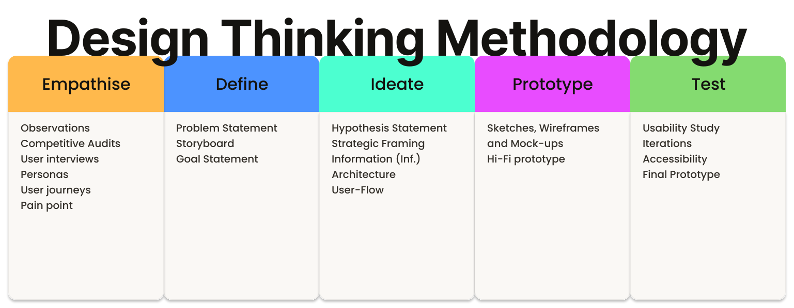

Cafeteria App

Case Study | Kelly Santos | 2022
This case study details the step-by-step development process of Cafeteria App, using the Design Thinking methodology, which resulted in an app that combines the functionality for ordering drinks, book tables, making payments, and splitting bills, all in one place.
Table of Contents
keyboard_arrow_down closeProject overview
About the project

This project aims to develop a mobile app for The Cafeteria that translates its physical charm into a digital experience, evoking a cozy atmosphere and the scent of fresh coffee while putting its services right at the user's fingertips.
Key objectives
Enable users to order drinks, book tables, making payments, all within the app.
Project Details
Scope of Work
- Apply a Human-Centred Design (HCD) approach, utilising the Design Thinking Methodology to drive the project from discovery through to execution.
- Conduct user research and analysis to understand user needs, pain points, behaviours, and refine the problem statement.
- Design user flows, wireframes, prototypes, and animations.
- Test the app to ensure usability and iterate the designs based on feedback.
Methodology
Design Thinking is a human-centred methodology that uses a five-stage process, Empathise, Define, Ideate, Prototype, and Test, to understand users and solve problems, resulting in solutions that are desirable, feasible, and viable.
This project employed the Design Thinking Methodology, guiding the process through user research, ideation, prototyping, and testing to produce the final Cafeteria App design.


Empathise
Empathise is the first phase of the Design Thinking process; it focuses on employing a variety of tools to uncover and understand the feelings, thoughts, and experiences of users, gathering data and insights to guide the design solutions.
To ensure a deep understanding of users and their experiences, 6 key methods were utilised to gather and structure data:
- Observations
- Competitive Audits
- User interviews
- User journeys
- Personas
- Pain points
Observations
Observation is a method that involves systematically watching and recording behaviours, events, or phenomena. It is a qualitative research approach that allows to gather data in a natural environment, without directly interacting with participants, to better understand the user experience.
An observation session was conducted on Thursday, 8 June 2022, during a visit to the Cafeteria shop. The visit aimed to better understand their environment, services and customers' behaviours, feelings and actions.
Observation Note
| Category | Details Revealed |
| Ambiance | The coffee shop offered a cosy space with a warm decoration. |
| Spatial Layout | The lighting, tables and stools are harmoniously displayed, making the customers feel welcomed and relaxed. |
| Product Offering | The menu is simplified, with few but assertive options of the classics contributing to the service agility and efficiency. |
| Traffic Patterns | The space was well-visited all day, mainly during the peak periods when customers faced long queues. |
| Customer Behaviour | Customers waited for their coffee while demonstrating impatience, conveying that they were running late or short on time. |
Insight
The combination of a cosy and warm space, efficient service and simplified menu has proven to be an effective strategy for building client loyalty, making the experience be worthwhile for customers.
Competitive Audit
A competitive audit is a tool used to evaluate the strengths and weaknesses of current and potential competitors. It provides vital insights into market trends, identifies gaps, and reveals opportunities to enhance the user experience.
An online competitive audit was conducted with three competitors (direct and indirect) mostly to identify the pros and cons of the competitors' digital (mobile or web) usability, offering and positioning.
Competitive Audit Planning
![A four-page UX design document titled 'Cafeteria App
Competitive Audit Report by researcher Kelly Santos'.
The report outlines a competitive analysis of three coffee providers:
Global Brew (an international chain),
FastBites McCafé (a fast-food coffee arm),
and Artisan Bean (a local Melbourne boutique café).
The pages include sections for audit goals, competitor descriptions,
a comparison table of digital services, and a breakdown of strengths and
weaknesses regarding website usability and market positioning.](Assets/Portfolio/Cafeteria/00-01-Competitive Audit.svg)
Competitive Audit Outcome
The audit reveals that while competitors excel in visual branding, they fail in digital inclusivity and direct-to-web functionality.
FastBites offers robust integration but lacks accessibility, while Global Brew and Artisan Bean ignore direct web-ordering.
Cafeteria’s app can bridge this gap by combining premium artisanal positioning with a high-utility interface, prioritizing price transparency, and frictionless "order ahead" features.
User Interviews
User interviews is a tool used to gather qualitative data and insights; it involves conversations with participants to understand their thoughts, feelings, and experiences.
Semi-structured, face-to-face interviews were conducted mostly to identify the users' (general public this time) needs, motivations, and pain points related to their daily cafe and dining experiences.
User Interviews Planning
![A two-page document titled 'Interview Questions for Cafeteria App,'
authored by UX researcher Kelly Santos. The first page covers Target Audience
Demographics (name, age, occupation, dining habits) and Needs, Preferences,
and Motivations, focusing on what makes a coffee shop visit successful.
The second page continues with questions regarding Pain Points and Obstacles,
such as time management, transaction experiences, and information accessibility,
concluding with a Disclaimer on data storage and security.](Assets/Portfolio/Cafeteria/00-02-Interviews.svg)
User Interviews Outcome
The user interview analysis successfully identified a diverse segment of target users, ranging from busy professionals to social and leisure seekers. The research outlines how their varying daily routines influence their experience within coffee shop environments.
This diversity is evident in the following quote extracts:
| Quote Extract | Category / Analysis | Implication |
I often have to skip my coffee break entirely because the queue is just too long to risk it before my next meeting. |
Time Constraints / Barriers | Highlights a high friction point regarding wait times. |
It’s frustrating when we arrive as a group and there’s nowhere to sit, or we can't split a single bill. |
Social Dynamics / Friction | Highlights a friction point related to social dynamics. The app must provide real-time table availability and a friction-free "split-bill" feature to support group dynamics. |
I'd visit more often if I knew for sure they had comfortable seating and a quiet atmosphere for me to read or work. |
Environment / Accessibility | Confirms that information transparency (noise levels/seating status) is a key motivator for choosing a location. |
Personas
A persona is a method used to create a fictional character that represents a group with common characteristics, such as their demographics, behaviours, motivations, and goals, clearly informing the project's target users.
It was identified two primary user personas: a time-constrained professional seeking efficiency and a retiree prioritizing comfort and accessibility.


User Journeys
A user journey is a method that visually maps the path a user takes to achieve a specific goal, highlighting their actions, thoughts, feelings, and pain points at each stage to identify opportunities for improvement.
The following four Journey Maps track the personas paths to achieve their goal.
Analla’s journey map illustrates her path to enjoying an espresso during her coffee break: from checking her schedule and driving to the shop, to savouring her drink and finally returning to work.

Ned’s journey map illustrates his experience of catching up with friends at a coffee shop. It highlights his desire for a cozy, accessible environment while identifying frustrations regarding the waiting times and the payment process.

Pain Points
Pain points are a method used to identify and declare specific problems or frustrations that target users experience while interacting with a product, service, or system, providing critical focus for the design process.
These two primary pain points represent the most significant barriers preventing users from achieving their goals.
Analla | Manager | 38 yo

Ned | Retiree | 60 yo

Pain points:
Ned, a social seeker, struggles with finding available seating and managing group payments at busy cafes. He needs a reliable way to book tables and split bills easily to ensure a comfortable and seamless experience with his friends.
Emphasise Outcome
Research conducted through the Design Thinking methodology confirms that users need a unified Cafeteria App to order drinks, book tables, and process payments.
Currently, users like Ned face frustrations with seating and bill-splitting, while Analla struggles with time-consuming queues that disrupt her work schedule.
By consolidating these features, the app will provide a faster and more seamless experience for all users.
Define
Define is the second phase of the Design Thinking process; it involves taking the information gathered during the Empathise phase to clearly establish the users' needs and problems.
To establish a clear project direction, this phase focused on three core outcomes:
- Problem Statement
- Storyboard
- Goal Statement
Problem Statement
A problem statement is a method that takes the raw data of user pain points and structures it into a clear, actionable, and concise definition of the problem intended to be solved.
The following problem statements highlight the pain points and needs identified: Ordering Friction and Booking and Payment Barriers, providing a focused foundation for subsequent design solutions.


Storyboard | Highlight
A storyboard is a visual representation of a user's journey, illustrating key moments, interactions, and emotions to communicate the narrative and context. It is used to understand, address, and clarify user experiences.
Analla's Storyboard
The following storyboard visually demonstrates her expectations, when facing a frustration.

Analla finds the peak hours at Cafeteria challenging. She believes that if the cafe offered an app for ordering drinks and book tables, she would have more time to relax and feel reinvigorated after her break.
Goal Statement
Goal statement is a clear and concise articulation of the desired outcome of a project, guiding the design process and ensuring alignment with user needs and business objectives.
The following goal statement was defined based on the observation, insights, data, and feedback gathered through the user research:
The Cafeteria App will let users seamlessly order drinks, book tables, and manage group payments. This will positively affect both customers and the business by providing a faster, more flexible cafe experience while allowing the business to optimize resource planning and operations. Effectiveness will be measured by analyzing user engagement metrics and business performance feedback.
Ideate
Ideate is the third phase of the Design Thinking process; it focuses on generating and exploring a wide range of potential solutions to the users' needs and problems identified during the Define phase.
In the Ideate phase, problem definitions were transformed into actionable solutions, resulting in four core strategic outcomes:
- Hypothesis Statement
- Need-Solution Framing
- Information Architecture
- User-Flow
Hypothesis Statement
A hypothesis statement is a method that informs educated, testable assumptions. It translates user insights or needs into actionable design solutions.
The following hypotheses were developed to address the key pain points uncovered during the research phase. These "If-Then" statements predict how specific design decisions may impact the user and their experience.


Need-Solution Framing
Need-Solution Framing is the process that bridges user needs and solutions, clearly stating problems alongside refined and prioritized ideas that will guide the project toward its desired outcome.
Design process led to refined solutions addressing user needs, seeking to enhance their experience.
Analla | Manager | 38 yo

User-needs:
Analla needs a fast and frictionless way to order her espresso that fits within her tight schedule.
Potential solution:
Implement pre-order functionality with time of pickup. This streamlines the pickup process and provides order transparency, effectively eliminating ordering friction for time-sensitive users.
Ned | Retiree | 60 yo
User-needs:
Ned needs to ensure a comfortable, guaranteed space (tables and seats) for his group and a simplified bill-splitting process.
Potential solution:
Develop a seamless reservation system with integrated group payment and bill-splitting tools. This removes the barriers of securing a table and simplifies the checkout process for social groups.
Information Architecture
Information Architecture is a structural map of a digital product, illustrating how content is organized, labelled, and navigated to ensure clarity and usability for users.
This Information Architecture showcases the app's intuitive navigation and the core sections of the Cafeteria App (Home, Bag, Reorder, Favourites, and Account).

User-Flow
User Flow is a visual representation of the pathways a user takes to complete tasks within a digital product, illustrating each step and decision point.
This user-flow illustrates the seamless navigation, allowing users to order, reorder, book a table, check favourites, manage their bag, and access their account, all with just one touch.

Prototype
Prototype is the fourth phase of the Design Thinking process; it transforms ideas that emerged during the Ideate phase into a tangible, cost-saving, and low-risk model of a product used to validate its design and concept.
The Prototype phase demonstrates a systematic approach to design, translating concepts into tangible, testable representations. This phase produced five key outcome:
- Design Phase
- Hi-Fi Prototypes
Design Phase
The development process began with preliminary paper sketches, which were iterated into digital wireframes. Finally, these were enriched with high-resolution imagery, branding, and interactive elements to create high-fidelity mockups that accurately represent the final design.

Hi-fidelity prototype
Hi-fidelity prototypes visually and functionally mimic the final product, illustrating realistic interactions, visual design, and user flows to facilitate thorough testing.
A high-fidelity prototype was developed to merge visual design with an interactive model. This served to illustrate the intended look and feel, while also being utilised for further usability testing and refinement.
![A sequence of seven high-fidelity mobile mock-ups for the 'Cafeteria' app, showcasing a clean black-and-white theme with high-quality coffee imagery. The screens include:
A minimalist Splash Screen and Sign-In/Sign-Up page.
A Menu displaying various coffee types with prices.
An customization selectors order screen for a Cappuccino with
customization options (milk type and quantity).
A Booking Interface featuring a calendar, time selectors, and a floor plan for
selecting a table.
A final Confirmation screen with a 'Thank you!' message,
order details, and an address in Melbourne.](Assets/Portfolio/Cafeteria/08-00 - Hi-Fidelity 01.svg)
Hi-fidelity prototype features
This hi-fidelity prototype video walkthrough of the Cafeteria App hi-fidelity prototype:
- Starting from the splash screen, the Cafeteria App immerses users in the ambiance of the café, reinforcing the brand identity. It replicates the experience of walking into the shop, assuring users they are in the right place.
- The sign-in screen evokes the feeling of standing at the entrance, giving users the option to enter or explore the menu.
- Once inside, users can explore the menu at their own pace to choose, add items to their favourites, and place their order.
- Alternatively, they can seamlessly navigate across the app and even personalise their account settings.
Test
Test is the fifth phase of the Design Thinking process; it actively evaluates the prototype’s concept, user flow, design, and functionality through real user interaction and feedback, identifying usability issues and driving design iterations.
In this phase, designs were assessed to identify usability issues and directly inform further refinement. The key outcomes of this testing phase include:
- Usability Study
- Refinement
- Accessibility
- Final Prototype
Usability study
In this phase, two rounds of usability studies were conducted to evaluate the prototype with users, identifying pain points and friction to inform design refinements for an intuitive and friction-free app experience.
- Low-fidelity: Findings from this initial study guided the transition of the designs from wireframes to mock-ups. The test results from the low-fidelity prototype showed that the navigation was intuitive, and users found the information they needed.
- Hi-fidelity: Subsequent usability testing with a high-fidelity prototype revealed that the table booking process was overly complex. Additionally, the dark visual aesthetic evoked a negative emotional response from users, indicating a clear need for refinement.
Refinement
Refinement is the stage in the Design Thinking process where identified usability issues found on the prototypes during the Test phase are resolved based on user feedback to create continuous improvements.
The results of usability tests revealed that users found the table booking process overly complex and visually dark, evoking a negative emotional response. To address this, the process was simplified and a more pleasant colour palette was selected.
![A side-by-side comparison of two versions of the 'Book a Table' screen for the
Cafeteria app, labeled with a red 'X' (incorrect) and a green checkmark (correct)
to show UX improvements.
Left Version (Before): Features a dense layout with a full monthly
calendar, multiple numerical input fields for guests and times, and a monochromatic
restaurant floor plan.
Right Version (After): Shows a streamlined, high-contrast design using teal accent
headers. It replaces the complex calendar with simple date and time dropdowns and
introduces a color-coded restaurant layout where available tables are highlighted in
teal for better visibility and ease of use.](Assets/Portfolio/Cafeteria/09 - iterations.png)
Accessibility
Accessibility in digital products focuses on ensuring usability for individuals with diverse abilities, visually representing features that accommodate various needs and promote inclusivity.
Accessibility | Layout
The app's layout was carefully crafted to ensure clear readability, employing a light and airy background, and incorporating visually appealing images to capture attention.

Accessibility | Typography
Clear and solid typography based on Poppins sans-serif fonts makes the information scannable and legible on the screen.

Accessibility | Colour Contrast
Colour contrast used in this design improves legibility, enhances accessibility, establishes visual hierarchy, contributes to aesthetics, and aids in branding and recognition.

Final Hi-fidelity prototype
A hi-fidelity prototype, the latest version, incorporates all the design refinements and improvements made based on user feedback and testing, showcases a cohesive and user-friendly experience for the Cafeteria App.

Takeaways
Impact
The Cafeteria App delivered a significant impact by blending the shop’s charm with a streamlined digital experience. By consolidating pre-orders, bookings, and group payments, the design eliminated common frustrations while maximizing efficiency for all users.
Analla's Quote"I love how intuitive the navigation is. Whether I’m booking a table for a weekend catch-up or just re-ordering my favourite latte while on the go, the experience is seamless and stress-free. It’s clearly crafted with people like me in mind."
What was learned
The importance of inclusive design took centre stage throughout this project. For instance, when designing the "Book a Table" feature, accessibility was prioritised by adding arrow-based inputs for the number of guests and time selection.
This made the app easier to use for those with motor disabilities, such as Parkinson’s, or for users in high-mobility situations, like booking a table while walking or commuting on a train.
Pain points:
Analla, a busy professional, struggles with unpredictable wait times and queuing during her limited work breaks. She needs a streamlined digital solution to order her coffee in advance, allowing her to maximize her break and minimize stress.